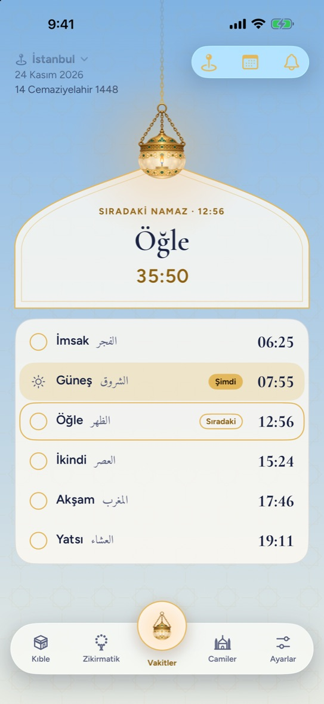
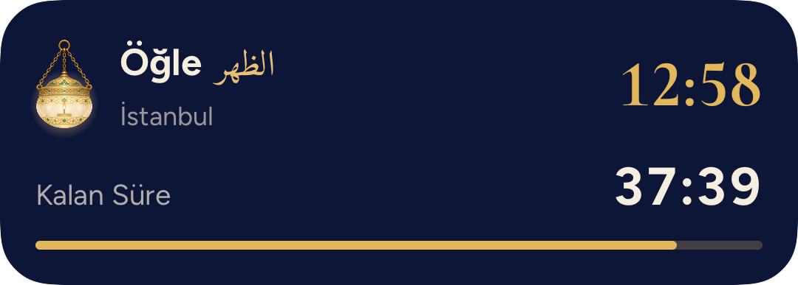
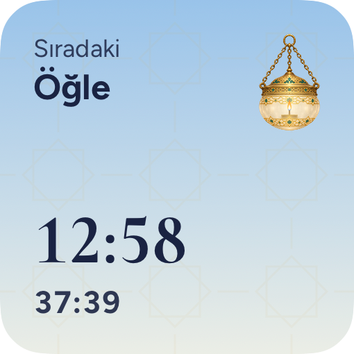
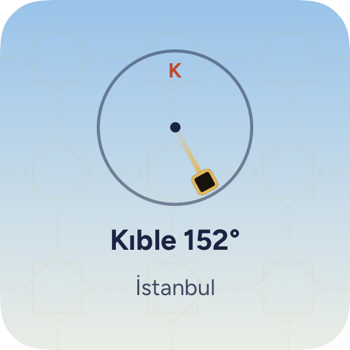
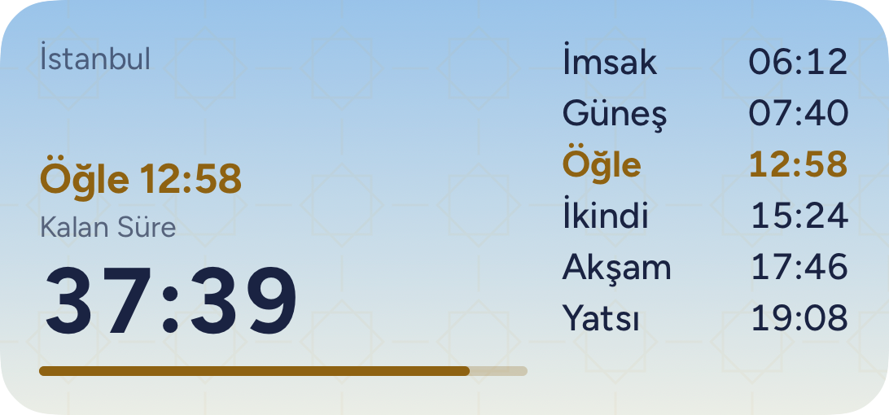
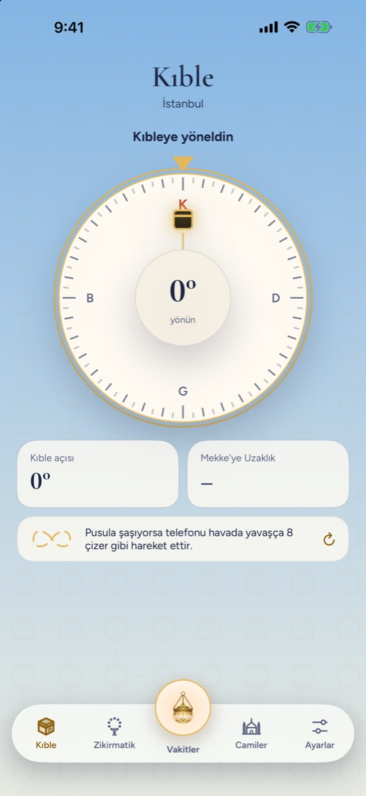
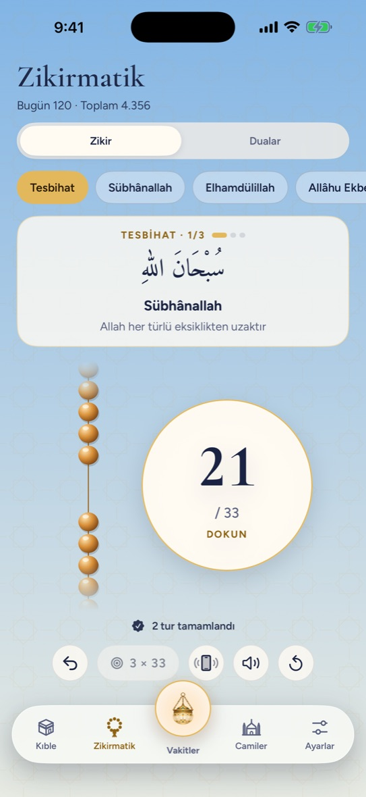
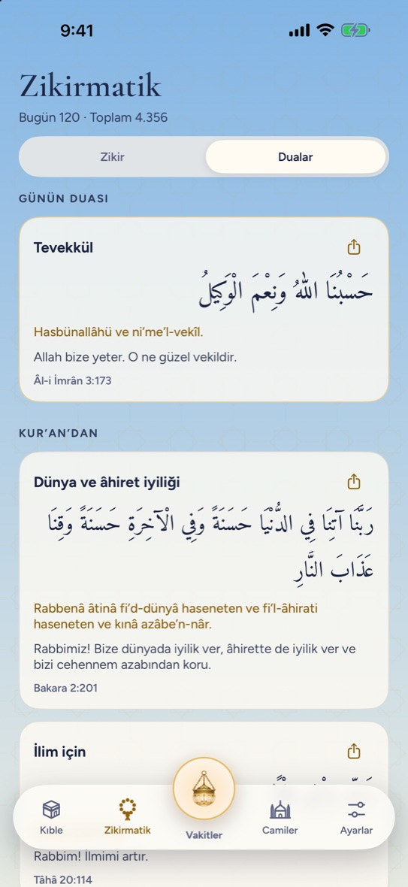

Her vakit, gökyüzüyle.
Namaz vakitleri telefonunda, internetsiz ve dakikası dakikasına hesaplanır. Ekrandaki gökyüzü vakitle birlikte değişir; asılı kandil sıradaki namaz yaklaştıkça titrer.
iPhone ve Apple Watch için ücretsiz
Güneşالشروق
İnternetsiz, dakikası dakikasına.
Vakitler cihazında, Diyanet yöntemiyle hesaplanır.
Birden fazla şehir kaydet, bir dokunuşla aralarında geç.

Öğleالظهر
Telefonunu açmadan bil.
Sıradaki vakit ve kalan süre kilit ekranında ve Dynamic Island'da canlı akar.
Ana ekran ve kilit ekranı widget'ları günün vakitlerini gösterir.




İkindiالعصر
Kıble, nerede olursan.
Pusula seni Kâbe'ye çevirir; doğru yöne döndüğünde altın bir ışık yanar.

Akşamالمغرب
Gerçek bir tesbih gibi.
Her dokunuşta bir taş ipten düşer ve alttakilere çarpar; sesi ve titreşimiyle.
Namaz sonrası tesbihat 33 × 3, hazır zikirler, kendi hedefin ve tur sayacı.

Yatsıالعشاء
Her gün bir dua.
Seçilmiş dualar Arapça aslı, okunuşu, meali ve kaynağıyla.

Sıradaki vakit, cebinde.
- Hesap açman gerekmez
- Reklam yok
- Konumun cihazında kalır
Türkçe, İngilizce, Almanca, Fransızca ve Arapça